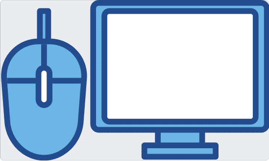

Az operációs rendszerekről
Az elektronikus számítógépek első generációját azok a tudósok használták elsősorban, akik a gép megépítésében részt vettek, vagy legalábbis értették a gép működését, felépítését. Az általuk készített programok teljesen az adott számítógép fizikai összetevőire, hardverére épültek. Később egyre többen kezdtek használni számítógépeket, és egyre nagyobb igény merült fel egy olyan felhasználói felületre, amin keresztül az ember könnyebben tud a számítógéppel kommunikálni. Ez kezdetben kizárólag karakteres felületen történt. A személyi számítógépeknél az 1980-as években megjelentek a grafikus felhasználói felületek, amelyek már széles kör számára tették könnyebben elérhetővé a számítógépek szolgáltatásait. A karakteres felületen jellemzően utasításokat, parancsokat adhatunk ki, amiknek eredményeként szöveges válaszokat kapunk a képernyőn. Ehhez ismernünk kell a kiadható utasításokat, azok használatának módját, paramétereit, és néha az eredmény értelmezése is csak megfelelő előismeretek birtokában lehetséges. Ezzel szemben a mai grafikus felhasználói felületek kialakításánál törekednek arra, hogy könnyen érthető, kevés előismerettel is használható legyen, a még esetleg nem ismert funkciók is intuitív módon felfedezhetők legyenek. A felhasználók széles körének készített operációs rendszerek szinte kivétel nélkül grafikus felhasználói felülettel rendelkeznek. Számítógépen ilyen pl. Windows, macOS, Chrome OS, különböző Linuxok. A mobiltelefonokon, tableteken pl. Android, iOS, iPadOS. A különböző grafikus felhasználói felületek használata attól lesz a felhasználóknak könnyű, hogy nagyon sok elemükben azonos módon működnek, így az egyik megismerése segíti a másik használatát.
A grafikus felhasználói felület kezelésének egyik szinte elengedhetetlen eszköze az egér vagy más mutatóvezérlő eszköz. Az operációs rendszerek viszonylag egységesek az egér használatban.
Alapvető egérműveletek, az egér segítségével a kis nyilat lehet mozgatni a képernyőn:
Bal gombbal egy szimpla kattintás: ez a kiválasztás, a kijelölés, ami lehet pl. egy gomb, felirat, állomány.
Bal gombbal dupla kattintás: ez a kiválasztott állomány megnyitása, a kiválasztott program elindítása, mappáknál a mappába való belépés Egyes programokban a többszörös kattintásnak is van funkciója.
Jobb gombbal kattintás: ez jellemzően a helyi menüt hozza elő, ami az adott környezetben leginkább releváns műveletekhez ad gyors hozzáférést.
Vonszolás: azaz amikor az egér bal gombját lenyomjuk, és miközben nyomva tartjuk, mozgatjuk az egeret. Ez egy objektum, ablak áthelyezését teszi lehetővé. A vonszolást a gomb vagy érintőfelület elengedésével fejezhetjük be.
Próbáljuk ki: a szövegszerkesztőben mi történik, ha egy szövegen belül egy szóra 1x, 2x, 4x vagy 4x kattintunk.
Természetesen a balkezes egérhasználathoz a jobb és a bal gomb felcserélhető az operációs rendszer beállításaiban. Az egér mellett a billentyűzetnek is jelentős szerepe van az operációs rendszer kezelésében. Azért, hogy könnyen megtanulható legyen a különböző programok használata, a billentyűkombinációk sokszor ugyanazt, vagy nagyon hasonló feladatokat látnak el.
Gyakran használt gyorsbillentyű:
- Ctrl + C: másolás. Ez sok esetben a Ctrl + Insert segítségével is elvégezhető
- Ctrl + V: : beillesztés. Sokszor lehet helyette Shift + Insert
- Ctrl + X: : kivágás. Esetleg Shift + Delete
- Ctrl + A: : mindent kijelöl
- F1: : a súgót nyitja meg
- F2: : átnevezés. A fájlkezelőben a fájl vagy mappa átnevezésére szolgál, a táblázatkezelőben pedig a kijelölt cella szerkesztésére.
- Alt + F4: : ablak bezárása
- Ctrl + F4: : egy ablak egy fülének bezárása, pl. böngészőben
- F5: : frissítés: Például a fájlkezelőben egy hálózati mappa megtekintésekor lehet jó, vagy a böngészőben, ha szeretnénk a weboldalt ismét betölteni.
- F10: : a program menüjének elérése
- Ctrl + S: : mentés
- Ctrl + P: : nyomtatás

Azzal, hogy a különböző programok hasonlóan viselkednek , ezáltal „kézre esnek", a szolgáltatásiak megvalósítják a könnyű, kényelmes használhatóságot, azaz a szoftver ergonómiát. Ehhez még hozzátartozik a felület logikus elrendezése, átláthatósága, a program által megvalósítandó funkciók logikus elérése.
Az operációs rendszer feladata: a felhasználóval való kapcsolattartás, és a programok futtatásához szükséges környezet biztosítása, a programok futtatása. A leggyakrabban használt operációs rendszerek lehetővé teszik a programok párhuzamos futtatását, a váltogatást közöttük.
Egy számítógépnél megszokott, hogy a gép indulásakor ki kell választani, hogy melyik felhasználó fogja használni, azaz minden felhasználónak elkülönített felhasználói fiókot hozhatunk létre. Ezzel elérhető, hogy legyen olyan tárterület a gépen, amit csak az egyik vagy csak a másik felhasználó érhet el. Ez az adatvédelem szempontjából nagyon fontos. Hasonlóan a tárterület biztosításához, felhasználónként azt is szabályozhatjuk, hogy kinek van lehetősége pl. programokat telepíteni, kinek csak futtatni. Akár az is megadható, hogy melyik felhasználó melyik programot indíthatja el.
A mobiltelefonokat jellemzően mindig csak egy személy használja , így ott a több felhasználó felvétele a rendszerbe nem alapvető elvárás. Vannak olyan mobiltelefonok, ahol van lehetőség több felhasználói fiókot is létrehozni, és vannak olyanok is, amelyeken egy felhasználónak az üzleti és magánjellegű tevékenységeihez kapcsolódó adatokat lehet jelszóval védetten elkülöníteni
Az operációs rendszerek azon kívül, hogy lehetőséget biztosítanak a programok futtatására, rengeteg segédprogramot tartalmaznak, amelyek nem elengedhetetlen részei az operációs rendszernek, de a digitális eszközünk használatát megkönnyítik. Ilyen program például egy számológép, egy egyszerű képszerkesztő, egy stopperóra, ami nem feltétlenül szükséges, de hasznos.